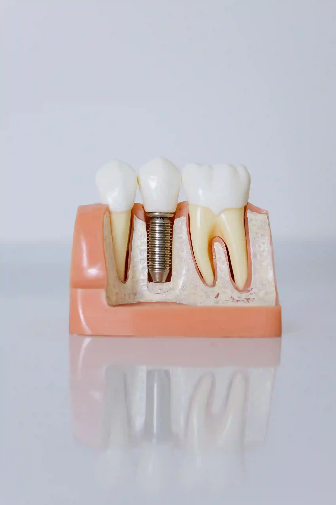
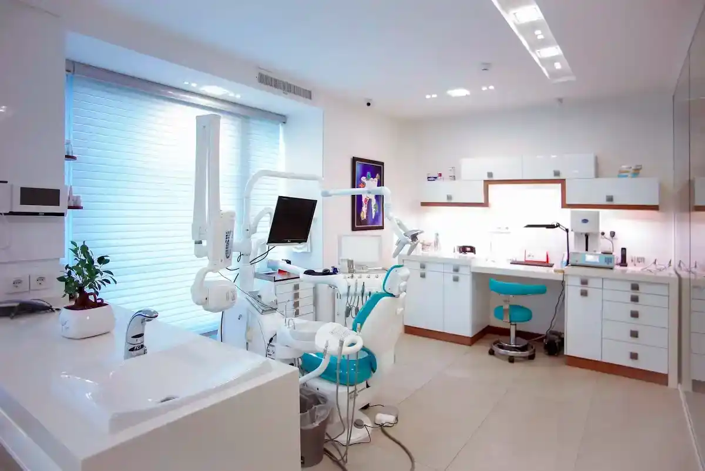
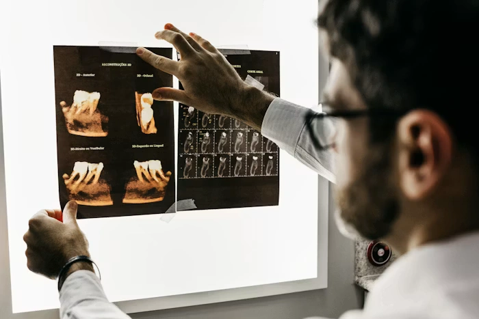
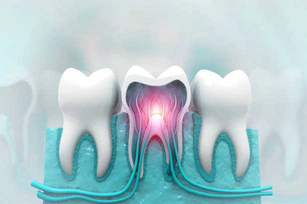

Prevention
The six-month checkup, decoded — what we're actually looking for.
A walkthrough of every step of a routine exam, from probing depths to the bite-wing X-ray, and why each one matters.
Read articleThe Stackly Journal
Straight answers on oral health, cosmetic dentistry, and what actually happens behind the studio doors — written by the clinicians who treat you, not a marketing team.
 Editor's pick
Editor's pick
Oral Health · 9 min read
Most dental damage builds silently for years before it hurts. We asked three Stackly clinicians what they wish every patient noticed sooner — from the texture of your enamel to the sound your jaw makes at 2am.

Browse the journal
Tap a filter to narrow things down.
A walkthrough of every step of a routine exam, from probing depths to the bite-wing X-ray, and why each one matters.
Read articleCost, longevity, and how much enamel you're really giving up with each option.
Read articleHow one patient went from avoiding the chair entirely to a full, calm restoration plan.
Read article
What early gum disease actually looks like, and the three-week test you can do at home.
Read article
Dr. Farrell breaks down the timeline, healing stages, and what guided surgery actually changes about the outcome — start to finish, in plain language.
Read articleQuieter equipment, warmer lighting, and a redesigned recovery lounge for longer procedures.
Read articleThe one-year rule most parents haven't heard, and how to make it a non-event for everyone.
Read article
Ines documented her entire clear-aligner journey — including the two weeks she almost quit.
Read articleNo articles in this category yet — check back soon.
Most read



Your next step
Bring your questions, concerns, or simply a fresh start. We will help you choose the right place to begin.
Talk to the studioTell us what you have noticed, even if you are not sure it matters.
We explain your options in plain language, with time for every question.
Take home a practical plan for a healthier, calmer smile.
Keep exploring